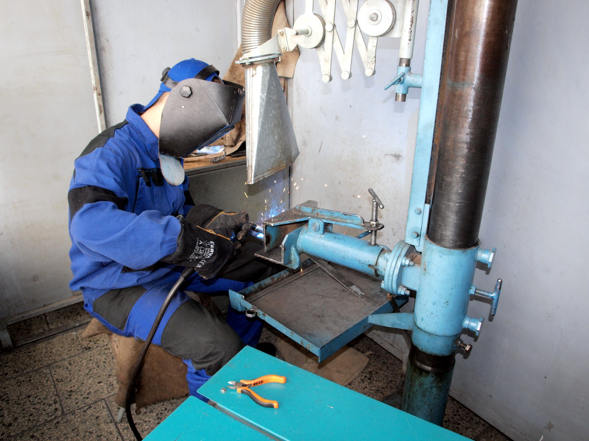

Ponuka zváračských školení
Základné kurzy zvárania podľa STN 05 0705
ZK 311-1 (Z-G1) - kurz zvárania plameňom a rezania kyslíkom
ZK 135-1 (Z-M1) - kurz zvárania v ochrannej atmosfére CO2 metódou MAG
ZK 111-1 (Z-E1) - kurz zvárania elektrickým oblúkom obalenou elektródou
ZK 111-8 (Z-E3) - kurz zvárania elektrickým oblúkom obalenou elektródou vysokolegované aust. ocele
ZK 141-1 (Z-T1) - kurz zvárania nelegov. a nízkolegovaných ocelí nevyžadujúce predohrev metódov TIG
ZK 141-8 (Z-T3) - kurz zvárania vysokolegovaných austenitických ocelí metódou TIG
Zaškolenie zváračských pracovníkov
ZP 311-2 (D-G2) - Rezanie a drážkovanie kyslíkom
ZP 311-5 (D-G5) - Nahrievanie - predohrev kovov plameňom
Školenie a preskúšanie zváračov z bezpečnostných ustanovení podľa
STN 05 0600, 05 0601, 05 0610, 05 0630,
Prípravné kurzy ukončené úradnou skúškou podľa STN EN ISO 9606-1
311 - zváranie plameňom
111 - zváranie elektrickým oblúkom obalenou elektródou
135 - zváranie v ochrannej atmosfére CO2 metódou MAG
141 - zváranie v ochrannej atmosfére metódou TIG
